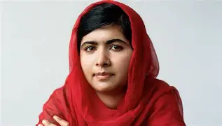

Malala Yousafzai
Malala Yousafzai nasceu em 12 de julho de 1997 no Vale de Swat, Paquistão. Desde jovem, ela se tornou uma ativista pelos direitos das mulheres à educação, sendo incentivada por seu pai, que era dono de escolas. Em 2012, Malala foi atacada pelo Talibã por sua defesa da educação feminina, mas sobreviveu e se tornou uma figura global. Em 2014, ela se tornou a mais jovem laureada com o Prêmio Nobel da Paz por seu trabalho em prol da educação e dos direitos das crianças.

principaias realizações:
Ativismo: Malala é uma ativista global que defende os direitos das mulheres e o acesso à educação.
Prêmio Nobel da Paz: Em 2014, Malala se tornou a pessoa mais jovem a receber o Prêmio Nobel da Paz.
Fundação Malala: Criou o Malala Fund, uma organização sem fins lucrativos para promover a educação feminina.
Ataque ao atentado: Malala sobreviveu a um atentado dos talibãs em 2012, que a tornou um símbolo de resistência.
Escola para garotas refugiadas: Em 2013, Malala abriu uma escola para garotas refugiadas no Líbano.
curiosidades:
Mais jovem ganhadora do Nobel: Malala é a pessoa mais jovem a receber o Prêmio Nobel da Paz, aos 17 anos.
Educação em Oxford: Ela estudou Filosofia, Política e Economia na Universidade de Oxford.
Asteroide em sua homenagem: Um asteroide foi nomeado em sua homenagem: 316201 Malala.
Sobrevivente de atentado: Malala foi baleada na cabeça por talibãs aos 15 anos, mas sobreviveu e continuou sua luta pela educação.
Casamento: Em 2021, Malala se casou com Asser Malik, mas afirmou que isso não mudará sua luta pela educação.
problemas ou desafios enfrentados:
Ataque brutal dos talibãs: Malala foi baleada na cabeça em 2012, quase resultando em sua morte, mas sobreviveu e continuou sua luta.
Mudanças nas leis islâmicas: O Talibã proibiu a educação feminina e imponha regras severas, incluindo o uso do véu.
Ameaças constantes: Malala enfrentou ameaças de morte e ataques devido à sua atividade como ativista pela educação.
Desafios culturais e políticos: Malala lidou com resistência cultural e política em diferentes regiões ao longo de sua luta.
datas importantes da vida da:
12 de julho de 1997: Nascimento de Malala em Mingora, no Vale do Swat, Paquistão.
9 de outubro de 2012: Malala foi atacada por um talibã por defender o direito das meninas à educação.
12 de julho de 2013: Malala discursou na sede da ONU, pedindo acesso universal à educação.
10 de dezembro de 2014: Malala recebeu o Prêmio Nobel da Paz, tornando-se a mais jovem laureada da história.